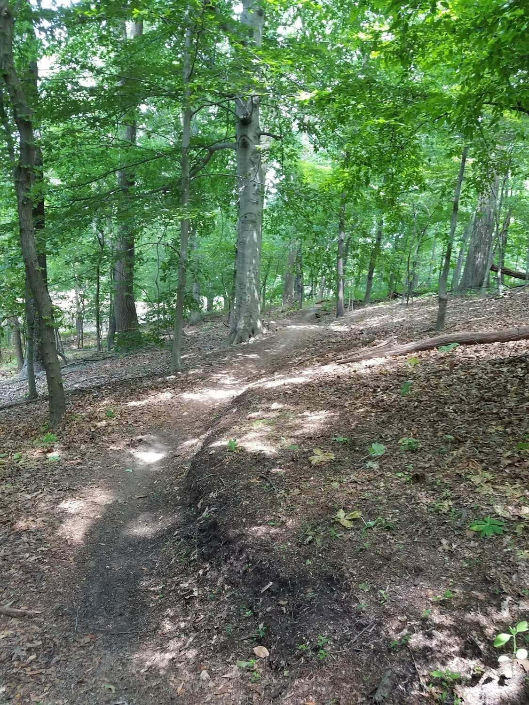
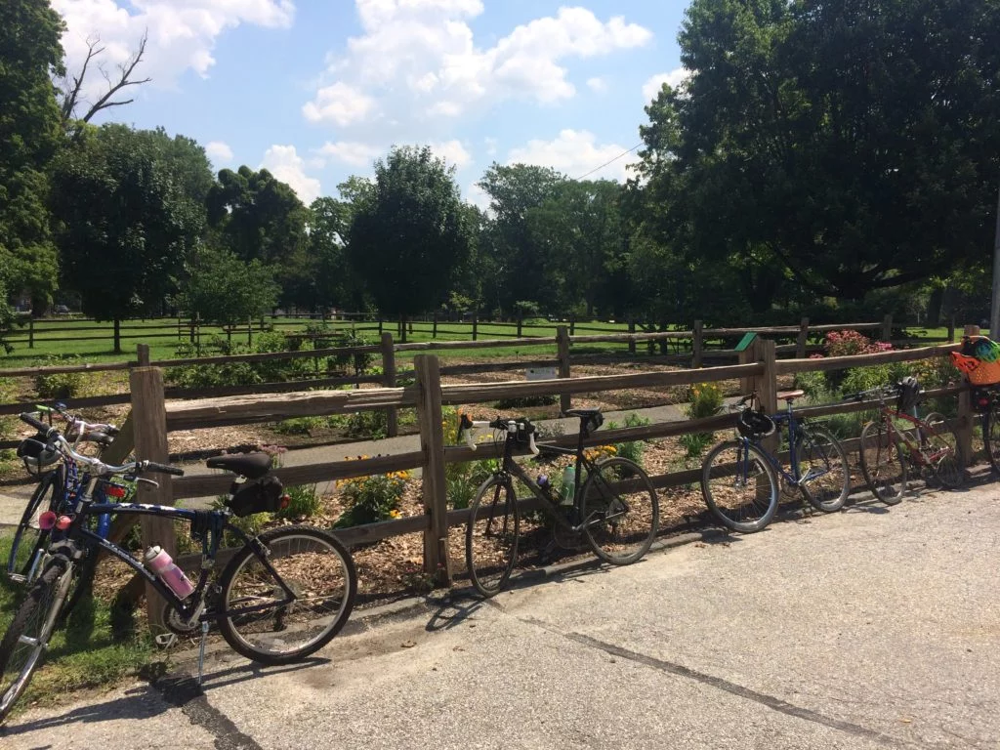
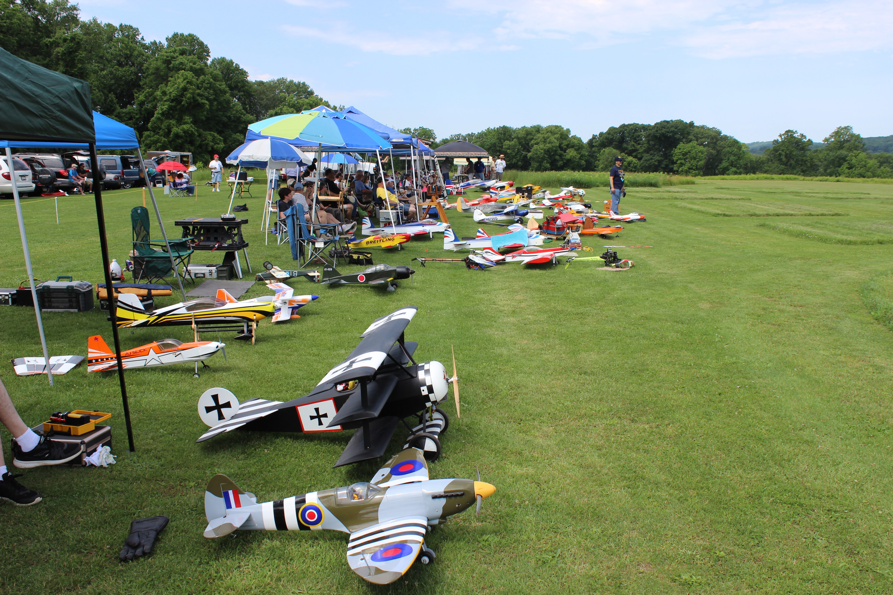
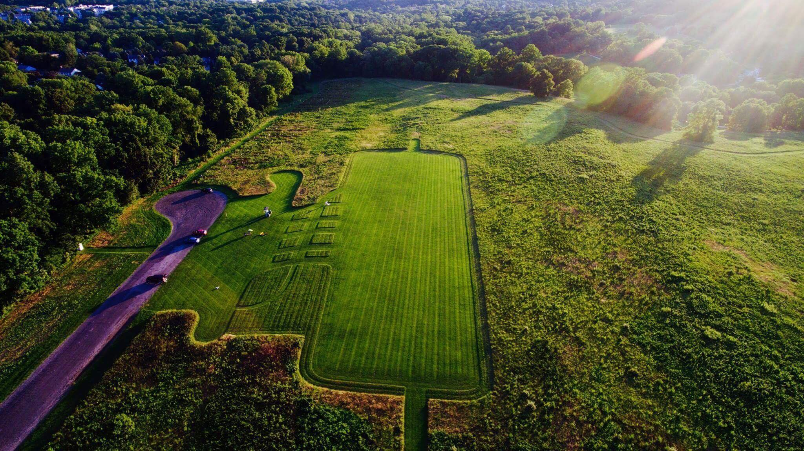
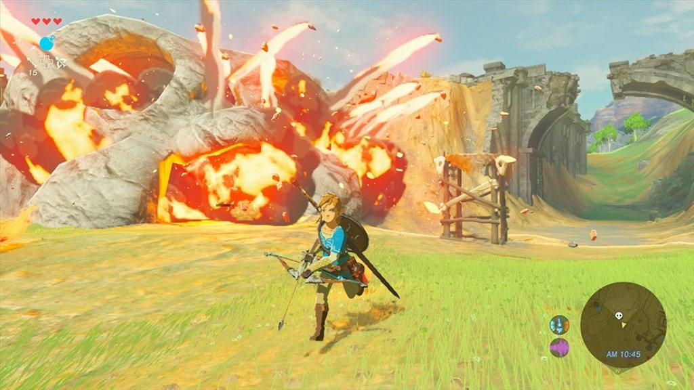
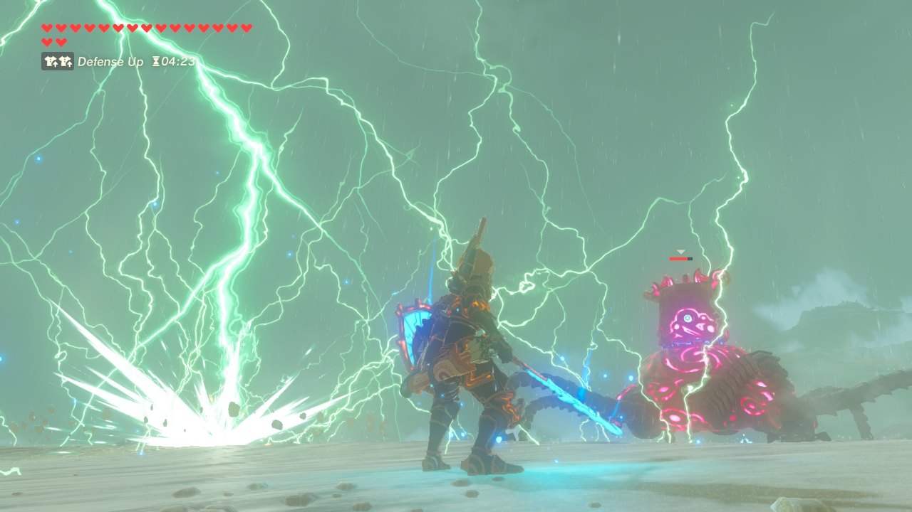

While a high risk and physically demanding sport, mountain biking remains at the top of the list of my favourite activities. Through this sport I've learn to buld self-confidence, self-reliance, mechanical aptitude, build physical endurance, and develop appreciation for the envoronment around me. I mostly enjoy riding in the Fairmont park (west) in philadelphia where i can find endless challenging tracks and low to high technical routes spanning for miles.

Through a wooded trail in the West fairmont Park, Philadelphia.

Bikes parked while riders take a break.
Flying RC airplanes
I learned to fly RC planes a couple of years ago and grew to love the activity and community around it. There's a variety of planes to fly from gas operated to battey operated, from glidders to 3D Hellis, from small 1ft planes to 1:20 scale planes, etc. and they all come with different levels of challenges and complexity. I mostly enjoy flying during competitions and through obstacle courses.

Flying event at the Valley Forge park, PA

Aerial viev of the Valley Forge RC planes flying field.
Computer Games
I play computer and console games mostly with my kids at home. In most cases we play RPG where we a set of tasks/ quests to complete to achieve main goal, and I enjoy seing different approaches from my kids and see how we grow in our problem solving skill. I also play MMORPG with other fans online.

Link running after attacking a Bokoblins' camp, Zelda: Breath Of The Wild

Link using electric attack against a Guardian, Zelda: Breath Of The Wild